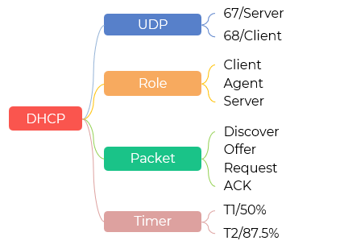
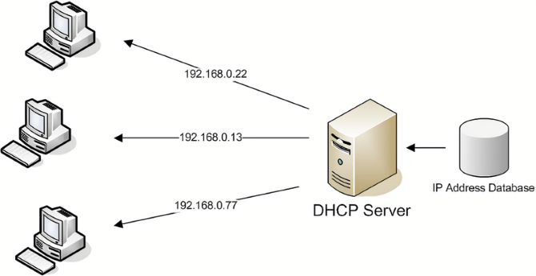
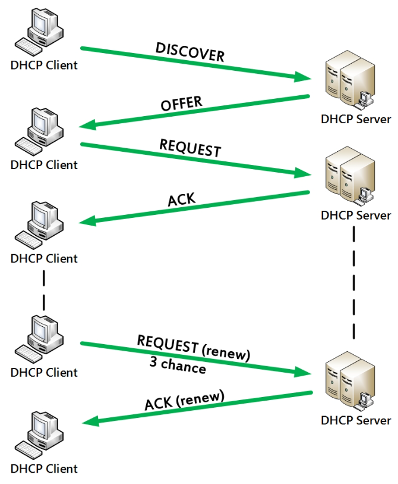
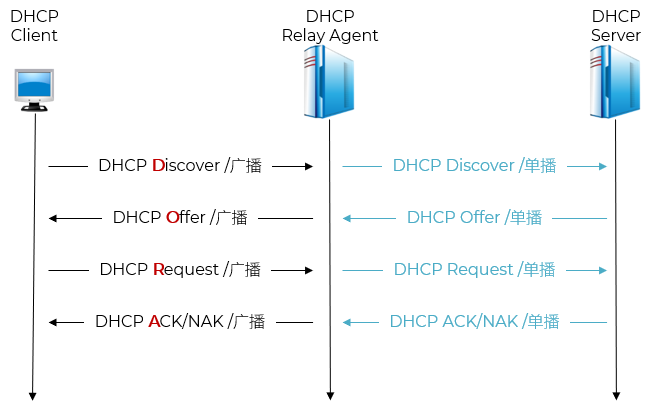
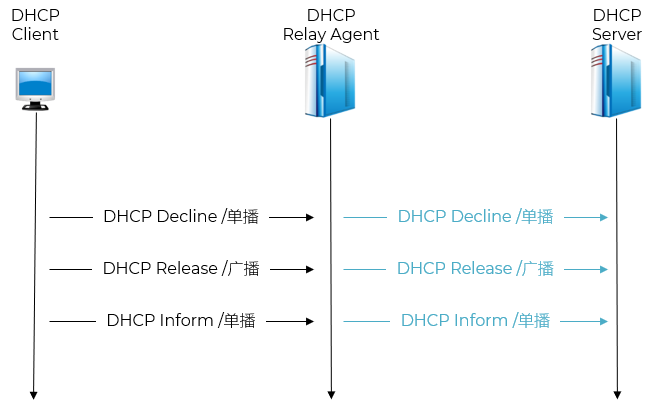
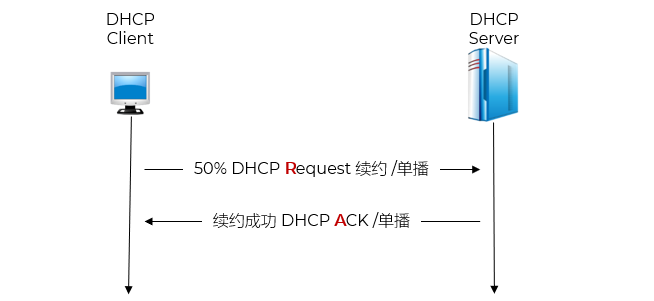
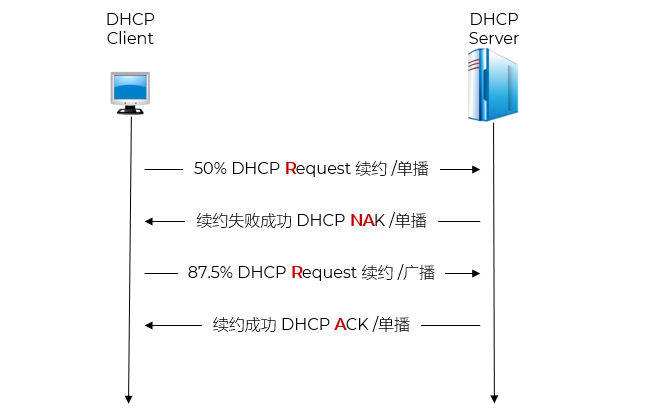

服务器：67 号端口
客户：68 号端口


No. Time Source Destination Protocol Info 24 46.937000 0.0.0.0 255.255.255.255 DHCP DHCP Discover - Transaction ID 0x3aa1 Frame 24: 410 bytes on wire (3280 bits), 410 bytes captured (3280 bits) Ethernet II, Src: HuaweiTe_f3:40:81 (54:89:98:f3:40:81), Dst: Broadcast (ff:ff:ff:ff:ff:ff) Internet Protocol, Src: 0.0.0.0 (0.0.0.0), Dst: 255.255.255.255 (255.255.255.255) User Datagram Protocol, Src Port: bootpc (68), Dst Port: bootps (67) Bootstrap Protocol
No. Time Source Destination Protocol Info 25 46.984000 10.1.1.1 10.1.1.253 DHCP DHCP Offer - Transaction ID 0x3aa1 Frame 25: 342 bytes on wire (2736 bits), 342 bytes captured (2736 bits) Ethernet II, Src: HuaweiTe_f1:05:56 (00:e0:fc:f1:05:56), Dst: HuaweiTe_f3:40:81 (54:89:98:f3:40:81) Internet Protocol, Src: 10.1.1.1 (10.1.1.1), Dst: 10.1.1.253 (10.1.1.253) User Datagram Protocol, Src Port: bootps (67), Dst Port: bootpc (68) Bootstrap Protocol
大多数现代网卡（包括华为设备的网卡）在 DHCP 过程中处于“混杂模式”或特殊状态，只要收到目的 MAC 是自己的以太网帧，即使目的 IP 自己还没配置，也会把它交给上层 DHCP 客户端处理
多个 DHCP 服务器可能同时响应，客户端通常只处理最先收到的 Offer
No. Time Source Destination Protocol Info 27 48.937000 0.0.0.0 255.255.255.255 DHCP DHCP Request - Transaction ID 0x3aa1 Frame 27: 410 bytes on wire (3280 bits), 410 bytes captured (3280 bits) Ethernet II, Src: HuaweiTe_f3:40:81 (54:89:98:f3:40:81), Dst: Broadcast (ff:ff:ff:ff:ff:ff) Internet Protocol, Src: 0.0.0.0 (0.0.0.0), Dst: 255.255.255.255 (255.255.255.255) User Datagram Protocol, Src Port: bootpc (68), Dst Port: bootps (67) Bootstrap Protocol
No. Time Source Destination Protocol Info 28 49.000000 10.1.1.1 10.1.1.253 DHCP DHCP ACK - Transaction ID 0x3aa1 Frame 28: 342 bytes on wire (2736 bits), 342 bytes captured (2736 bits) Ethernet II, Src: HuaweiTe_f1:05:56 (00:e0:fc:f1:05:56), Dst: HuaweiTe_f3:40:81 (54:89:98:f3:40:81) Internet Protocol, Src: 10.1.1.1 (10.1.1.1), Dst: 10.1.1.253 (10.1.1.253) User Datagram Protocol, Src Port: bootps (67), Dst Port: bootpc (68) Bootstrap Protocol
在千兆局域网中，Windows/Linux 主机通常 300~800ms 内完成 DHCP
用户开机后，系统初始化、加载驱动、启动服务等过程本身就需要几秒到十几秒
DHCP 的几百毫秒几乎不可感知
四个报文 Transaction ID 均为 0x3aa1，说明它们属于同一次 DHCP 交互，便于客户端/服务器匹配请求与响应


防止 IP 长期闲置
支持网络中设备动态加入/离开
实现地址池的自动回收与再分配
租期为 8 小时（28800 秒），则 T1 = 4 小时（14400 秒）
租期为 8 小时，则 T2 ≈ 7 小时（25200 秒）


若 T1 和 T2 均失败，到达 租期 100% 时，客户端必须停止使用该 IP 地址
随后重新发起完整的 DHCP Discover 流程获取新地址
Discover
Offer
Request
ACK
T1 50%
T2 87.5%
DHCPDISCOVER – The client broadcast a DHCPDISCOVER packet in order to locate a DHCP server in the network, in some cases that the DHCP server isn’t in the same subnet of the client, you’ll need to configure in your network devices (usually routers) a DHCP Relay Agent, in order to transfer the DHCPDISCOVER packet to the DHCP server.
DHCPOFFER – The DHCP server broadcast a DHCPOFFER packet to the client which includes an offer to use a unique IP address for the client.
DHCPREQUEST – The client broadcast a DHCPREQUEST packet to the DHCP server with an answer, and “asks” from the server to “rent” the unique address that the server offer to her.
DHCPACK – The DHCP server broadcast a DHCPACK packet to the client, in this packet the server acknowledge the request from the client to use the IP address, and provide to the client the IP address lease and other details such as DNS servers, default gateway, etc. if the server cannot provide the requested IP address or from some reasons the address is not valid the server sends DHCPNACK packet in stand of DHCPACK, more information about DHCPNACK is under the specific subject – DHCPNACK.
DHCP Relay Agent is any kind of host (usually a router or server) that listen to DHCP/BOOTP broadcast from clients on subnets without local DHCP servers.
The DHCP Relay Agent forwards the packets from the clients and the DHCP server that sitting on different physical subnets to each other in order to supply ‘connection’ between the DHCP Server to the clients, and opposite (from the clients to the server).